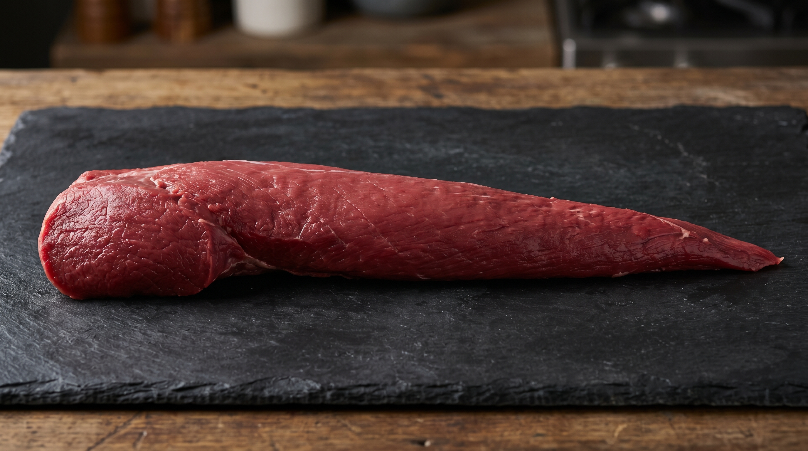

Mapa CarneCerta
Maciez premium e perfil fitness
O File Mignon é uma escolha sofisticada para quem quer extrema maciez, textura fina e baixo teor de gordura.

Ideal para • fitness • grelha • medalhões
Maciez
5/5
Muito macio
Gordura
1/5
Extremamente magro
Sabor
4/5
Suave e refinado
Abrir recomendador inteligente
File Mignon
Corte extremamente macio e muito magro, perfeito para quem busca praticidade, textura premium e menor teor de gordura.
O File Mignon não é o corte mais barato nem o mais saboroso, mas entrega excelente resposta em grelha, frigideira e preparos rápidos quando a prioridade é maciez e performance fitness.
Fitness
Maciez alta
Preparos rápidos
4.9
Perfil fitness
Excelente para quem valoriza maciez, textura delicada e um corte mais leve, especialmente em preparos curtos e delicados.
Ideal para
Dica do açougueiro IA
Grelhe em fogo alto por pouco tempo para preservar a textura e evitar ressecamento, já que é um corte muito magro.